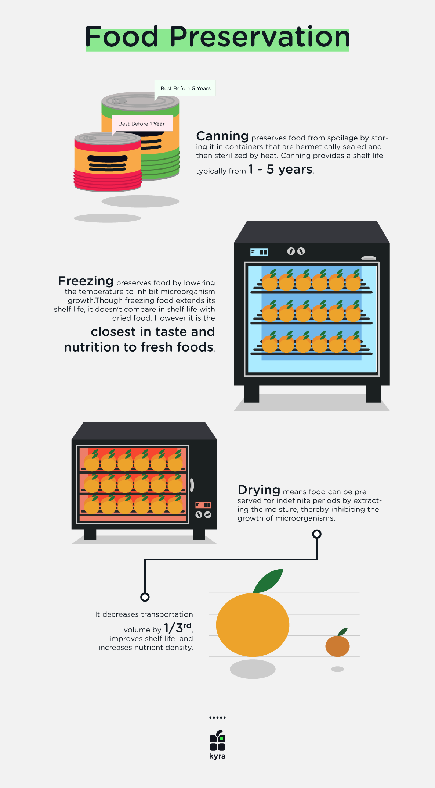
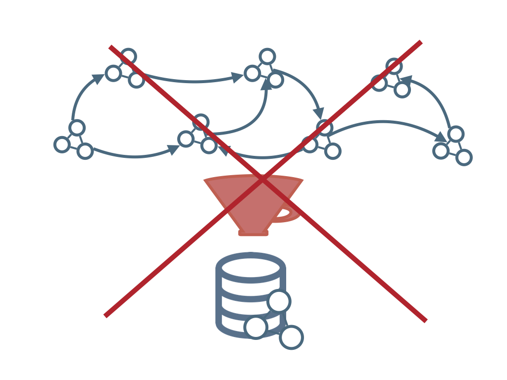
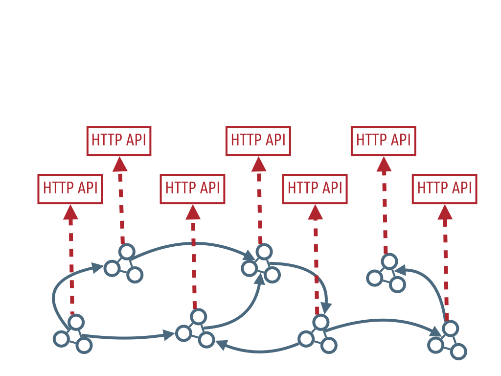
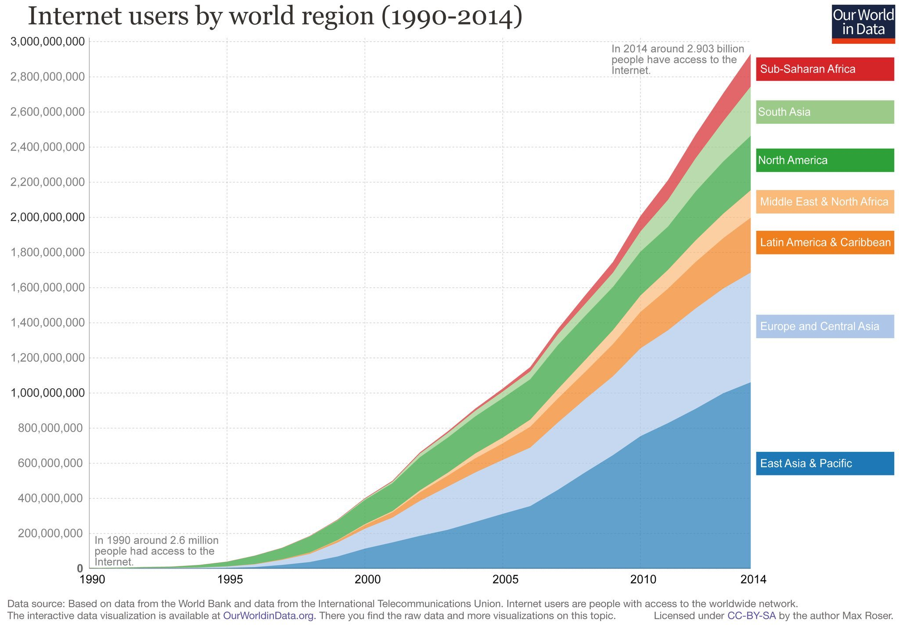
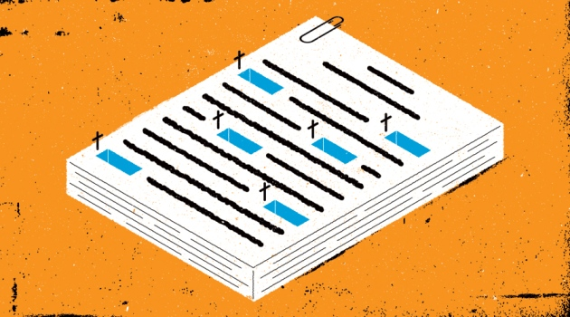
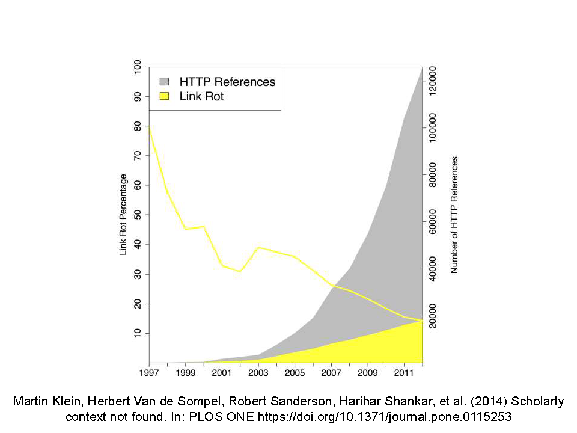
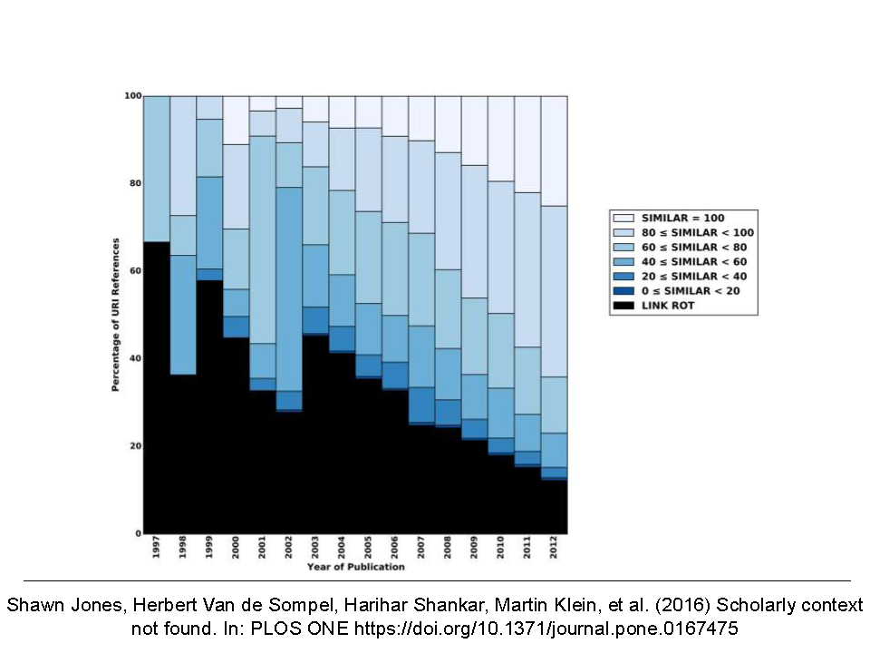
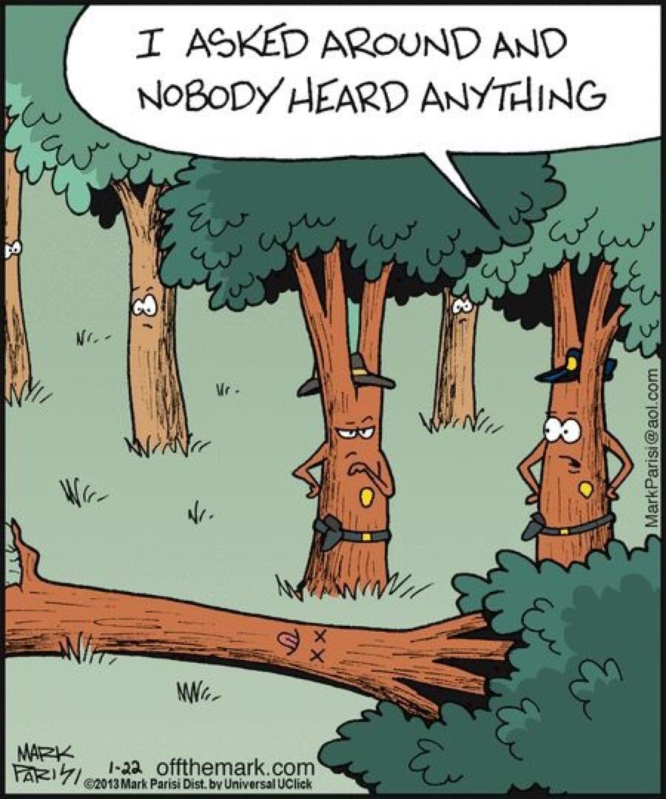
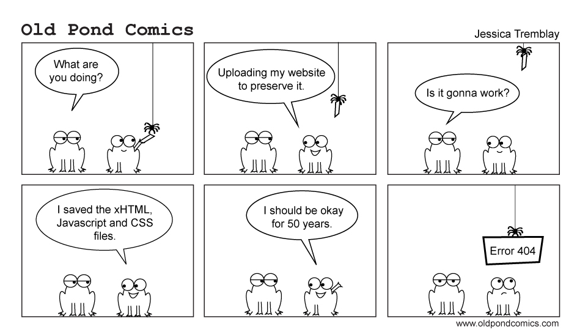

There are many sides
to preservation.
The context of this talk
is as follows...

Web of Linked Data?



What assumptions are there about data evolution?
- Versioned Data?
- Provenance is a directed acyclic graph.
- Multiple truths can exist at the same time.
- Historical Data?
- Provenance is a timeline.
- Only truth can exist at the same time.
Archive or Archiving?
Linked Data archiving as the product
- RDF indexes for versioning
- Dydra, Virtuoso, XRDF3X, ...
- Representing versions/time:
Technical
(Increasingly) Popular research tracks.
Linked Data archiving as the process
- Some technological building blocks
- Linked Data interfaces, change detection, publishing, crawling & querying
Technical, as well as Infrastructural & Societal.
Rather unknown territory (but there are
technologies).
We are loosing thousands of Alexandria libraries each day.
We have lost so much of the early Web history, just as we have lost so much of early Human history.
Kalev H. Leetaru - University of Illinois
Practical issues

Link Rot

Illustration by the Project Twins

Content Drift

Persistent Identification
How is the Web archived today?
Strategies
- Versioning systems
- Transactional
- Snapshot
Versioning
Transactional

Snapshot
Archivability
Web of Linked Data
Reproducibility of Query results
- Sustain the validity of claims
- Backwards compatibility of applications
Data archiving intrests more than curators & activists
Data driven journalism.
- Product: transparency of the editorial process
- Process: interaction with users, public
Issues
- Link Rot
- Content Drift
- Concept Drift
- "Please don't change your vocabulary" (Check out DRIFT-A-LOD workshop)
- Problem in other domains as well Machine Learning
Concept Drift
Persistent Identification
Robust Links

Archivability
Linked Data is in essence easier to archive.
- Raw, already machine processable data
- No obfuscation by client-side scripting
Prevent mistakes from the past: complexity of the client & publishing
- Technology: Dokeili
- Standardisation: make sure this is thought of